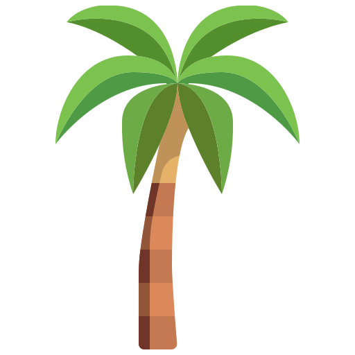
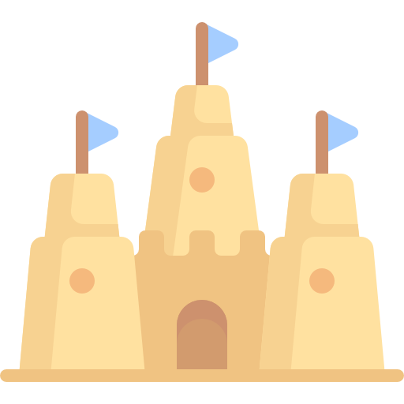
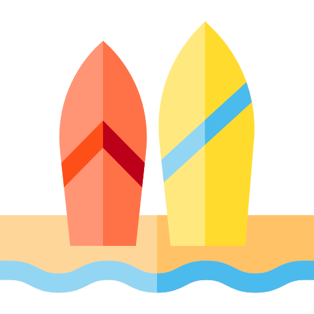

Skala Kecerdasan Wechsler Dewasa
Temukan Kemampuan Kognitif Anda
Temukan Kemampuan Kognitif Anda
FSIQ (Full Scale Intelligence Quotient) pada Wechsler Adult Intelligence Scale (WAIS) adalah ukuran yang digunakan untuk menilai kecerdasan dan kemampuan kognitif seseorang. Tes ini meliputi berbagai subtes yang mengukur kemampuan berbeda, termasuk:
Skor FSIQ dihasilkan dari kombinasi berbagai subtes ini dan memberikan perkiraan kemampuan kognitif umum seseorang.
Versi awal yang dikembangkan oleh David Wechsler untuk mengukur kecerdasan orang dewasa.
Versi pertama Wechsler Adult Intelligence Scale (WAIS) diterbitkan.
Mengukur kemampuan seseorang dalam menyimpan dan memanipulasi informasi dalam waktu singkat. Contoh subtes: Digit Span, Arithmetic.
Kombinasi dari VSI dan FRI, memberikan gambaran tentang kemampuan intelektual utama tanpa mempertimbangkan WMI dan PSI.
Mengukur kemampuan berpikir logis, memecahkan masalah, dan mengenali pola hubungan antara konsep yang kompleks. Contoh subtes: Matrix Reasoning, Figure Weights.
Mengukur kemampuan dalam memahami hubungan spasial dan memanipulasi bentuk visual. Contoh subtes: Block Design, Visual Puzzles.
Mengukur seberapa cepat seseorang dapat memproses informasi sederhana dan melakukan tugas kognitif secara efisien. Contoh subtes: Symbol Search, Coding.
Skor rata-rata WAIS-IV adalah 100, dengan standar deviasi 15.
Rentang skor: